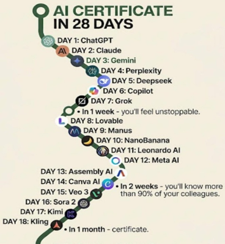
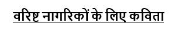
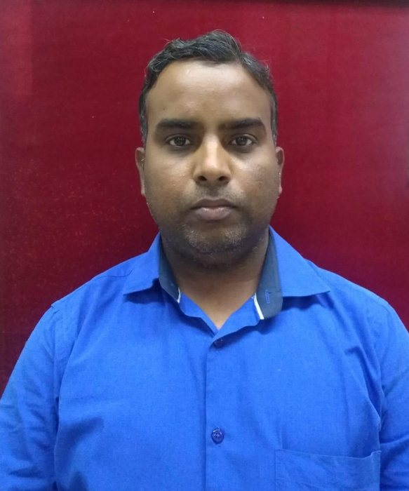
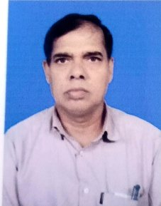
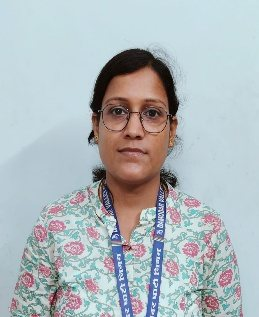
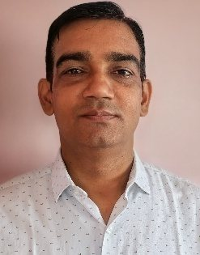
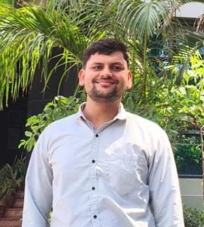

Dear Readers, welcome to the June 2026 edition of MY DVC – MY VOICE. As we step into the vibrant monsoon season, this month's edition captures our collective strides toward technological modernization, legislative readiness, community welfare, and sustainable growth across the Damodar Valley Corporation.
Our featured HR Insight takes a deep dive into the dual realities of the modern workplace: Artificial Intelligence in Human Resources. As digital transformation reshapes the corporate landscape, the future lies in the powerful intersection of artificial intelligence and human intelligence — using AI to drive analytical precision and speed while anchoring our core practices in empathy, ethics, and human-centric leadership. Alongside technological adoption, keeping pace with changing statutory frameworks remains vital. This issue highlights the crucial development regarding the delegation of authority under the Industrial Relations Code, 2020, designed to streamline trade union recognition and strengthen collective bargaining.
Operational excellence is driven by a committed, safe, and collaborative workforce. We are proud to share the launch of "संवाद से समाधान अभियान" at MTPS. Conceived as a flagship campaign, this structured dialogue forum bridges management, contractors, and outsourced workers to address compliance, welfare, and safety through collective problem-solving. Speaking of safety, our nationwide commitment to operational harmony was prominently displayed during the Electrical Safety Week Campaign, bringing crucial awareness, emergency planning updates, and safety pledges to every plant site.
Beyond our operations, DVC continues to foster a culture of holistic health and environmental consciousness. This month, our stations celebrated the 12th International Day of Yoga under the theme "Yoga for Healthy Ageing," emphasizing sustainable physical and mental well-being. Furthermore, aligning with the global campaign #NowForClimate, World Environment Day was marked by impactful green rallies, extensive tree plantation drives, and an inspiring "Waste to Worth" campaign at DSTPS that transformed industrial scrap into eco-friendly plant transportation.
From critical CSR milestones — like the launch of the Trinetra Archery Academy at DVC Tubed to support rural youth, local health drives, and collaborative blood donation camps — to creative expressions in our Employee Corner, this issue reflects the vibrant pulse of DVC.
We extend our deep gratitude to the contributors who made this edition possible and invite all employees to keep sharing their achievements, ideas, and creative entries. Don't forget to put your knowledge to the test in this month's Current Affairs Quiz!
Happy Reading!
✍️ The Editorial Team
MY DVC – MY VOICE
Transforming the Future of Work
The Human Resources (HR) function is undergoing a significant transformation with the adoption of Artificial Intelligence (AI). Once focused primarily on administrative processes, HR is now evolving into a strategic business partner by leveraging AI to improve efficiency, enhance employee experience, and enable data-driven decision-making. Rather than replacing human judgment, AI empowers HR professionals by automating routine tasks and allowing them to focus on people-centric initiatives.
AI-powered platforms screen resumes, match candidate profiles with job requirements, schedule interviews, and answer applicant queries through chatbots — reducing hiring time while recruiters focus on skills, cultural fit, and potential.
Modern AI systems recommend personalized learning paths based on role, competencies, and career aspirations. Adaptive platforms help employees acquire new skills at their own pace.
AI enables managers to analyze performance trends, identify skill gaps, and provide timely feedback. Data-driven insights support fairer evaluations and informed talent decisions.
AI-powered sentiment analysis and virtual HR assistants help organizations understand employee concerns, respond to routine queries, and improve workplace communication.
By analyzing historical and real-time data, AI assists HR leaders in forecasting manpower requirements, identifying future skill needs, and planning succession effectively.
For Damodar Valley Corporation, AI presents opportunities to modernize HR processes while strengthening organizational effectiveness. Potential applications include:
These applications can improve service delivery while enabling HR teams to devote more time to employee development, organizational culture, and strategic initiatives.
The successful adoption of AI requires responsible implementation. HR professionals must ensure that AI systems are transparent, unbiased, secure, and compliant with organizational policies and legal requirements. Human oversight remains essential, particularly in decisions involving recruitment, promotions, performance evaluation, and employee welfare. AI should complement — not replace — the empathy, ethical judgment, and interpersonal skills that define effective human resource management.
As workplaces become increasingly digital, HR professionals must develop AI literacy alongside their expertise in people management. The future of HR lies in the collaboration between artificial intelligence and human intelligence. While AI brings speed, accuracy, and analytical capabilities, people bring creativity, empathy, ethics, and leadership. Together, they can create smarter workplaces, better employee experiences, and more resilient organizations. As DVC continues its journey of digital transformation, embracing AI responsibly can help build an agile, efficient, and employee-centric HR ecosystem — one that is well-equipped to meet the challenges and opportunities of the future.
AI skills have become essential in today's workplace as organizations increasingly rely on Artificial Intelligence for automation, data-driven decision-making, and operational efficiency. Demand for AI-certified professionals is rapidly growing because certified individuals possess the practical knowledge required to implement and manage AI technologies effectively.
DVC is progressing towards digital transformation through technology-driven initiatives such as SAP, and AI certification programs for executives through short-term Learning & Development (L&D) courses can support this transformation.
AI certifications benefit both organizations and employees by helping bridge skill gaps, improving productivity, enhancing employee mobility, and supporting career growth. Professional AI credentials provide a competitive advantage by validating an individual's ability to design, implement, and manage AI solutions while demonstrating practical expertise that employers increasingly value.
Investing in AI certification prepares employees for future challenges, enabling them to contribute more effectively to organizational innovation and technological advancement.

The Ministry of Labour & Employment has issued a notification (Gazette of India, 11 June 2026) delegating the authority to appoint Verification Officers for the recognition of Negotiating Unions and Negotiating Councils under the Industrial Relations Code, 2020. This step is expected to streamline the recognition of representative trade unions in establishments where the Central Government is the appropriate authority.
Section 14 of the Industrial Relations Code, 2020 provides for the recognition of a Negotiating Union or Negotiating Council to facilitate effective collective bargaining between employers and workers. Verification Officers are responsible for verifying union membership and ensuring compliance with the prescribed criteria for recognition.
The notification applies to establishments where the Central Government is the appropriate government, including eligible Central Public Sector Undertakings and other notified establishments.
The delegation of appointment powers marks an important step towards the effective implementation of the Industrial Relations Code, 2020. By simplifying the recognition process for Negotiating Unions and Negotiating Councils, the Government aims to promote faster decision-making, stronger collective bargaining, and improved industrial relations.
Source: Ministry of Labour & Employment, Government of India.
A flagship program to address the issues and concerns of outsourced workers through constructive dialogue and collaborative problem-solving.



Damodar Valley Corporation enthusiastically celebrated the 12th International Day of Yoga on 21 June 2026 across its establishments. The celebrations reflected the Corporation's continued commitment to promoting employee health, well-being, and a balanced lifestyle through the practice of yoga.
Across all DVC locations, the celebrations reinforced the importance of incorporating yoga into everyday life to improve physical health, reduce stress, strengthen mental resilience, and promote holistic well-being. The programmes concluded with a collective pledge by participants to make yoga a regular practice and to foster a culture of health, wellness, and balanced living throughout the Corporation.
Durgapur Steel Thermal Power Station (DSTPS) celebrated World Environment Day with a series of initiatives promoting environmental sustainability, reflecting the station's commitment to a greener future.
The celebrations began with a Green March led by Shri Anil Kumar Jain, CGM & Head of Project, joined by senior officials, employees, CISF personnel, contractual workers, and women employees — spreading awareness through slogans advocating environmental conservation. A Tree Plantation Drive followed, during which nearly 100 fruit-bearing saplings were planted to enhance the station's green cover and biodiversity. Shri Jain encouraged everyone to adopt eco-friendly practices such as conserving energy and water, reducing plastic use, and supporting plantation drives.
A Cycle Rally at Benachity Colony further promoted pollution-free transportation and cycling as a healthy, sustainable mode of travel. The programme concluded with a collective pledge to protect the environment, reaffirming DSTPS's commitment to sustainable development and responsible power generation.
DVC remains committed to fostering a vibrant safety culture and ensuring a safe and healthy working environment for all. The programme across DVC included Electrical Safety Badge Pinning, a Safety & Health Pledge, release of the revised On-Site Disaster Management Plan, distribution of electrical safety awareness materials and Electric Shock Treatment Charts, and the opening of Safety Suggestion Boxes.
As part of Swachhata Pakhwada 2026, DVC's Durgapur Steel Thermal Power Station launched an innovative "Waste to Worth" initiative by refurbishing 12 discarded bicycles into fully functional cycles for short-distance movement within the plant premises.
The initiative promotes eco-friendly transportation by reducing the use of motor vehicles, conserving fuel, lowering carbon emissions, and encouraging a healthier lifestyle among employees. Launched under the leadership of Shri Anil Kumar Jain, CGM & HOP, the programme was marked by a symbolic cycle ride by senior officials, reinforcing the message of green mobility and employee wellness.
By transforming scrap into valuable assets, the initiative reflects DSTPS's commitment to Swachhata, sustainability, resource conservation, the circular economy, and employee well-being — demonstrating how innovative practices can contribute to a greener and healthier workplace.
DVC's Koderma Thermal Power Station (KTPS) Hospital conducted a mop-up round of the Pulse Polio Immunization Campaign on 1 July 2026 in collaboration with the Primary Health Centre (PHC), Chandwara, Koderma. Children below five years of age who had missed their dose were administered the life-saving oral polio vaccine under the nationwide slogan "दो बूंद ज़िन्दगी की" — supporting the Government of India's mission to sustain a polio-free nation.
Under its CSR initiative and the Government of India's Nikshay Poshan Yojana, DVC Konar distributed nutrition kits to tuberculosis patients at the Vishnugarh Community Health Centre in Hazaribagh, following the Deputy Commissioner's directions to provide nutritional support alongside medical treatment. Each kit contained gram, lentils, jaggery, mustard oil, soybean oil, and soya chunks to improve patients' immunity and recovery.
DVC Tubed inaugurated the Trinetra Archery Academy at DVC Tubed Coal Mines, Latehar, in collaboration with the Dola & Rahul Banerjee Sports Foundation. The academy was inaugurated by Shri S.K. Panda, Member (Technical), DVC, in the presence of senior officials and Arjuna Awardees Smt. Dola Banerjee and Shri Rahul Banerjee. It will provide professional archery training — building technical skills, fitness, mental resilience, and sportsmanship. Cultural performances and an archery demonstration marked the occasion.
At RTPS, refurbished steel furniture made from surplus office assets was distributed to Naragoria D.D. High School, Dumurhir High School, and nearby primary schools under the Education Development Programme. At MTPS, 50 serviceable ceiling fans were distributed to Gangajalghati High School and Nityanandpur High School, and carrom boards were provided to the youth of Lotiaboni Navin Sangh to promote indoor sports and constructive recreation.
DVC organized blood donation camps across its projects. On World Blood Donor Day, MTPS collected 46 units of blood with participation from employees, CISF personnel, and local residents. Ahead of DVC Foundation Day, RTPS collected 40 units, while Konar Dispensary — in collaboration with Arogyam Hospital, Hazaribag — collected another 40 units. These initiatives reflect DVC's commitment to strengthening healthcare services and fostering a spirit of service and community welfare.
With the monsoon at its peak, this month's Health Corner is a timely reminder to guard against seasonal illnesses. The poster highlights simple, practical precautions for the rainy season:
Click the poster to view the full prevention guide.
Rely on your own knowledge — no Google search or AI tools while answering. Let's keep the challenge fun and fair!



We hope you enjoy going through this edition as much as we enjoyed creating it for you! Our team is committed to bringing you meaningful and engaging content, and we truly value your thoughts, ideas, and creativity — so keep them coming!
All DVC employees are invited to contribute to the HR Newsletter. Share your experiences, achievements, ideas, photographs, or news from your station in English or Hindi.
Send your contributions and feedback by the 22nd of every month to:
📩 dvchrnewsletter@gmail.com🎬 Behind the Scenes: Buddhagaya Bharat Sorode, Monalisa, Rakhi Kumari
{kind=link}
{kind=link}
{kind=link}
{kind=link}
{kind=link}
{kind=link}
{kind=link}
{kind=link}
{kind=link}
{kind=link}
{kind=link}
{kind=link}
{kind=link}
{kind=link}
{kind=link}
{kind=link}
{kind=link}
{kind=link}
{kind=link}
{kind=link}
{kind=link}
{kind=link}
{kind=link}
{kind=link}
{kind=link}
{kind=link}
{kind=link}
{kind=link}
{kind=link}
{kind=link}
{kind=link}